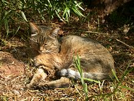

Il loro habitat
 I gatti domestici discendono dai gatti selvatici africani, ma il loro habitat naturale è diventato molto più vario a causa della loro diffusione in tutto il mondo come animali domestici. Tuttavia, i loro antenati selvatici, come il gatto selvatico africano (Felis silvestris lybica), sono originari dell'Africa subsahariana e delle regioni del Medio Oriente. Questi gatti selvatici preferiscono habitat vari come savane, steppe, foreste aperte e aree rocciose, dove possono trovare prede e rifugiarsi dalle minacce. Sono abili cacciatori e hanno adattato le loro abitudini di caccia e il loro comportamento in base all'ambiente in cui vivono.Caratteristiche fisiche
 I gatti sono caratterizzati da corpi snelli e muscolosi, teste proporzionate con musi relativamente corti, occhi grandi e rotondi, orecchie mobili e artigli retrattili sulle zampe. La loro pelliccia può variare notevolmente in lunghezza, colore e pattern, e possono avere una vasta gamma di colorazioni degli occhi. Queste caratteristiche fisiche li rendono adatti alla caccia, all'arrampicata e alla vita sia all'interno che all'esterno.
I gatti sono caratterizzati da corpi snelli e muscolosi, teste proporzionate con musi relativamente corti, occhi grandi e rotondi, orecchie mobili e artigli retrattili sulle zampe. La loro pelliccia può variare notevolmente in lunghezza, colore e pattern, e possono avere una vasta gamma di colorazioni degli occhi. Queste caratteristiche fisiche li rendono adatti alla caccia, all'arrampicata e alla vita sia all'interno che all'esterno.
Comportamento sociale

I gatti mostrano un comportamento sociale complesso, sebbene siano generalmente considerati animali indipendenti. Alcuni punti chiave includono: Territorialità: I gatti sono territoriali e marcano il loro territorio con segnali odoriferi. Comunicazione: Utilizzano una varietà di segnali, inclusi miagolii, sibili e linguaggio del corpo. Grooming: Si dedicano alla toelettatura quotidiana, sia per rimanere puliti che per rafforzare i legami sociali. Gioco sociale: Possono giocare tra loro o con gli umani, dimostrando fiducia e affetto. Gerarchia sociale: In gruppi di gatti, possono emergere gerarchie sociali, sebbene fluidamente. Legami con gli umani: I gatti domestici possono sviluppare forti legami affettivi con i loro proprietari umani, cercando contatto fisico e interazione. In breve, i gatti possono mostrare un comportamento sociale ricco e variato, sia con altri gatti che con gli esseri umani, sebbene mantengano la loro indipendenza come parte integrante della loro natura.
Cosa mangiano

I gatti sono carnivori obbligati, il che significa che la loro dieta naturale è composta principalmente da carne. Gli alimenti che i gatti mangiano includono: Carne: Carne fresca o carne cruda è una parte essenziale della dieta di un gatto. Possono mangiare carne di manzo, pollo, tacchino, agnello e altri tipi di carne. Pesce: Alcuni gatti gradiscono il pesce, che può essere una fonte di proteine e acidi grassi omega-3. Tuttavia, il pesce non dovrebbe costituire la maggior parte della loro dieta a causa del rischio di tossicità da mercurio e di squilibri nutrizionali. Alimenti commerciali per gatti: Esistono alimenti secchi e umidi formulati specificamente per le esigenze nutrizionali dei gatti. Questi alimenti possono contenere carne, pesce, vitamine, minerali e altri nutrienti essenziali. Alimentazione casalinga: Alcuni proprietari scelgono di preparare i pasti dei loro gatti in casa, assicurandosi di includere una corretta proporzione di proteine, grassi, carboidrati, vitamine e minerali. È importante notare che i gatti hanno esigenze nutrizionali specifiche e non possono sopravvivere a lungo senza una dieta equilibrata. È sempre consigliabile consultare un veterinario per determinare la dieta migliore per il proprio gatto e assicurarsi che riceva tutti i nutrienti di cui ha bisogno.